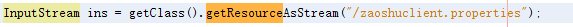
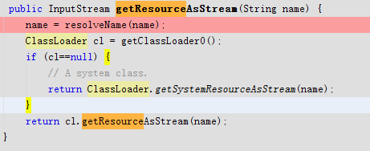
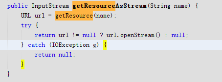
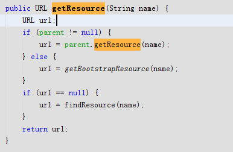
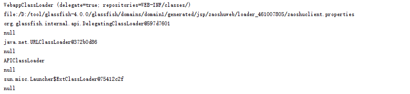

了解ClassLoader的好处
有助于了解java类的加载机制,了解web应用服务器是怎么加载进war包并怎么工作的
注意点
- 相信很多人都会在各种文章中见到
AppClassloader和SystemClassloader,其实这两个是指同一个东西,只是叫法不同. ClassLoader.getSystemResourceAsStream(name);类似这种,ClassLoader有且仅有提供了几个方法跟systemloader有关的方法.- Bootstrap是爷爷、ExtClassLoader是爸爸、AppClassLoader是孩子（孙子）。但由于爸爸ExtClassLoader太忙了，所以照顾孩子AppClassLoader的责任就有爷爷Bootstrap来处理了(意思是，虽然ExtClassLoader是AppClassLoader老爸，但却是由爷爷Bootstrap加载的AppClassLoader。该情况与中国国情完全一样)。
- 项目的配置文件的覆盖顺序为：根类加载器 > 扩展类加载器 > 应用中的资源文件 > 应用所依赖的第三方jar
各个ClassLoader的关联
普通java项目:AppClassLoader>>ExtClassLoader>>bootstrapLoader
glassfish web项目:WebappClassLoader>>DelegatingClassLoader>>URLClassLoader>>APIClassLoader>>ExtClassLoader>>bootstrapLoader
案例分析
有一次我在编写一个sdk,打算把它打包成jar,给另外的web应用使用,姑且叫该项目为B工程;
A工程(web项目)依赖B工程,在B工程中的classpath下有个配置文件plugins.xml,同时在A工程的classpath下也有一个同名的配置文件,那么A工程下的配置文件则会覆盖B下的文件,同样包路径的class文件也会覆盖。
所以,如果我在A工程下写一个配置文件plugins.xml,那么它打包成war文件的时候会覆盖B工程jar包里面的配置文件plugins.xml,然后在glassfish上运行war包的时候会被
WebAppClassLoader加载(如果是java项目则会被AppClassloader获取到)
下面是项目中用到的部分代码:


这里解释下,因为BootstrapLoader是jvm底层实现,没有具体实现的Class类,所以如果获取到的ClassLoader为null,则表示是由BootstrapLoader加载的;
所以这里的逻辑为:如果是bootstraploader,但是因为bootstraploader下肯定没有资源文件,就获取systemloader下的资源文件
如果不是bootstraploader,就直接取得classloader然后调用getResourceAsStream方法


这里的findResource是每个继承了ClassLoader的类可以自行实现的方法,是为了自定义自己独特的加载方法.
getResource方法,是委托模型,先遍历到最顶部的ClassLoader(即bootstrapClassLoader),如果找到直接返回url,如果找不到,就找extClassLoader,这样逐渐遍历.
逻辑是这样的,从WebappClassLoader开始找,儿子让父亲去找,父亲让自己的父亲去找…到了bootstrapClassLoader了,自己都是祖先了,没有父亲可以找了,所以调用自己的getBootstrapResource方法找,找不到,再继续调用自己独特的方法findResource找,还是找不到,只能返回null给儿子,儿子说”父亲找不到,只能自己找了”,所以调用自己独特的方法findResource去找,结果也找不到,再继续交给儿子…直到后面WebappClassLoader自己找到了…你说为什么WebappClassLoader一开始不自己找呢,这就是所谓的委托模型…
依次遍历的顺序如下:
org.glassfish.web.loader.WebappClassLoader
org.glassfish.internal.api.DelegatingClassLoader
java.net.URLClassLoader
APIClassLoader
ExtClassLoader——ext下的jar里面
bootstrapLoader——–jre/classes下
看下图可能更理解点,我把配置文件放在classpath的包里面,然后最外层的项目没有配置文件:

参考资料
版权声明:
本文首发于GODTREE 博客，版权所有，侵权必究，转载请注明出处。
本文永久链接：https://godtree94.github.io/posts/2135/